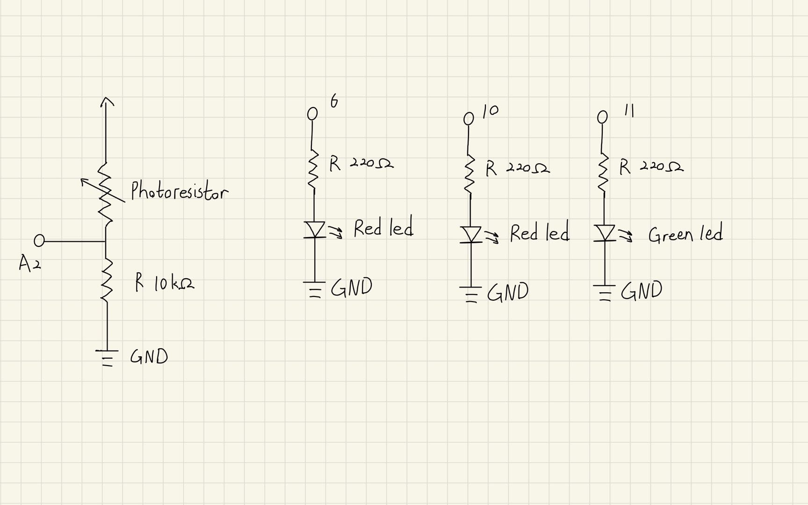
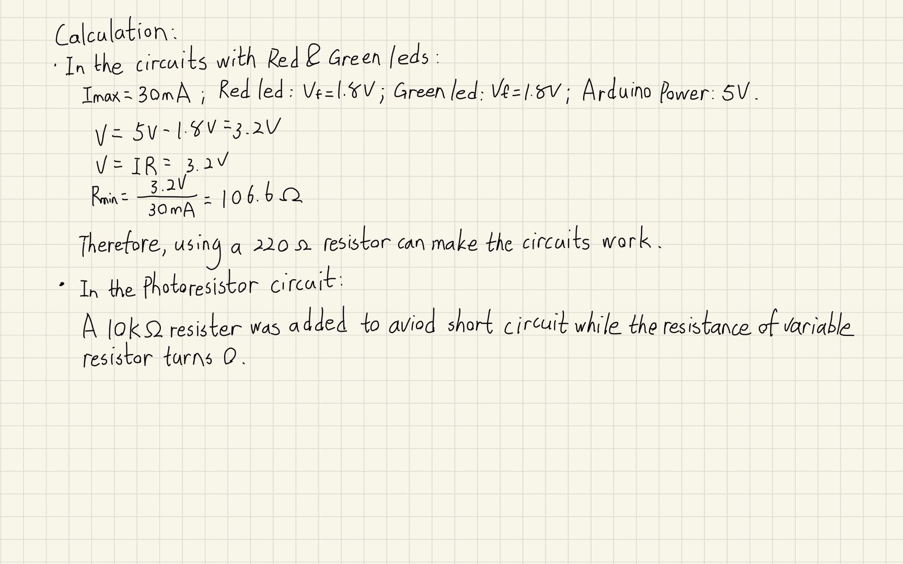
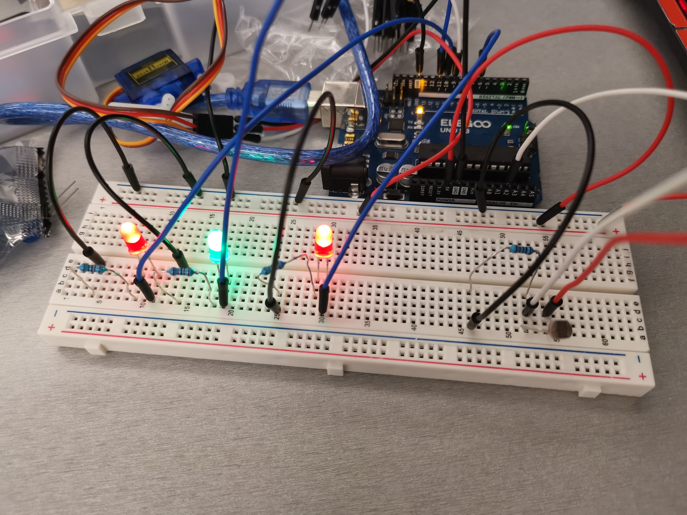

Congyi's Assignment 3!
A schematic for 3 LEDs and one photoresistor connected to the Arduino. The LEDs changed states becasue of changes in the sensor.
Components in the circuit:
2 red LEDs
1 green LED
3 220ohm resistors
1 photoresistor
1 10kohm resistor
several wires
Schematic:


Circuit:

The circuit was implemented on my breadboard. Input Wires are pluged into pin 6, 10, and 11. The photoresistor is attached to pin A2 for reading the analog. Output wires are all pluged into the ground.

The above picture shows the state of the leds when the photoresistor is fully covered.
Firmware:
The pin 6, 10, and 11 are outputs and pin A2 is input.
I calibrated the max and minimum sensor value at the beginning for a better user experience.
The program will print those sensor vlaues for giving a reference. The sensor value normally stay in a range of 600 to 900 before constrain.
One red and one green leds get dimmer as if photoresistor is covered. Another red led stops blinking when the sensor is fully covered.
int sensorValue = 0; // the sensor value
int sensorMin = 0; // minimum sensor value
int sensorMax = 1023; // maximum sensor value
const int sensorPin = A2; // pin that the sensor is attached to
// the setup routine runs once when you press reset:
void setup() {
// declare Pin 11 to be an output:
pinMode(11, OUTPUT);
// declare Pin 6 to be an output:
pinMode(6, OUTPUT);
// declare Pin 10 to be an output:
pinMode(10, OUTPUT);
// put your setup code here, to run once:
digitalWrite(11, HIGH);
// initialize serial communication at 9600 bits per second:
Serial.begin(9600);
// calibrate during the first five seconds
while (millis() < 5000) { // while the time doesn't exceed five seconds
sensorValue = analogRead(sensorPin); // read the analog in value:
// record the maximum sensor value
if (sensorValue > sensorMax) { // if the current value is bigger than the recorded one
sensorMax = sensorValue; // update the new max sensor value
}
// record the minimum sensor value
if (sensorValue < sensorMin) { // if the current value is smaller than recorded one
sensorMin = sensorValue; // update the new min sensor value
}
}
// signal the end of the calibration period
digitalWrite(13, LOW);
}
// put your main code here, to run repeatedly:
void loop() {
// read the analog in value:
int val = analogRead(A2);
// constrain the anaglog value with the sensor values from calibration:
int sensVal = constrain(val, sensorMin, sensorMax);
// map it to the range of the analog out:
val = map(sensVal, sensorMin, sensorMax, 0, 255);
// set the brightness of the led in pin 11
analogWrite(11, val);
// set the brightness of the led in pin 10
analogWrite(10, val);
// if the other leds are on, led in pin 6 blinks
if (val > 0){ // if the analog out value is bigger than 0
digitalWrite(6, HIGH); // turn the LED on (HIGH is the voltage level)
delay(1000); // wait for a second
digitalWrite(6, LOW); // turn the LED off by making the voltage LOW
delay(1000); // wait for a second
}
// print the results to the Serial Monitor:
Serial.print(sensorMax); // prints the max sensor value
Serial.println(sensorMin); // prints the min sensor value and then change a line
Serial.print("sensor="); // prints "sensor=""
Serial.print(sensVal); // prints the constrained sensor value
Serial.print("\t output="); // prints a tab and "output="
Serial.println(val); // prints the analog out value of leds
}
Circuit's Operation GIF: